Two full missions on the default seed, played through the on-screen controls in a desktop browser (1440 × 900). Run 1 played sharp: scan ahead, strike every ALERT. Run 2 scanned ahead the same way but never struck, leaving every fight to ALPHA. Assessed against the Hook model: trigger, action, variable reward, investment.
The moment-to-moment triggers work. The loop doesn't close: one strategy solves the mission with no cost, the rewards repeat word for word, and nothing the player does carries into the next mission.
| Run 1 · strike every ALERT | Run 2 · let ALPHA decide | |
|---|---|---|
| Result | Mission success | Mission complete · casualties |
| Mission clock used | 4:51 of 10:00 | 8:08 of 10:00 |
| Operators lost | 0 | 3 (replaced by resupply) |
| Fights ALPHA took | 0 | 4 (3 of them ambushes) |
| Budget | $9.6M → $10.23M | $9.6M → $9.76M by 3:27 |
| HQ decisions | 3 drone strikes | 1 resupply call |
| Last real decision | 1:12 in (then re-imaging and watching) | 3:27 in (resupply) |
External triggers are the best part of the game. The red ALERT band, ALPHA's resupply call docked at the team bar and the Listen prompt each pull the eye to one action. Only one ALERT flashes at a time, so the cue is never ambiguous.
Fix: put a cue in every 30–45 s of mission time (a new contact, an intercept with a real lead, a weather window), and end every mission with an open thread for the next one.
Every action is one or two clicks: Analyze, ALERT then Drone, Send resupply. The ability side of Fogg's model is excellent.
Fix: make every strike a real trade (cost above bounty, collateral risk, a cooldown, or a ROE call on an alerted group). Give each weapon a target type only it handles.
The map is rolled per seed, so where the groups stand varies. What they say and what the player gets back never does.
Fix: make intercepts and kill-site finds pay out variably (a patrol route, a weapons cache, a time window, a bonus target, sometimes nothing). Grade the wrap-up: time, casualties, spend, intel quality, with a headline that changes with performance.
Nothing the player does stores value. The $630K run 1 earned disappears with Play again; the operators who survived aren't remembered; the intel gathered doesn't seed the next map.
Fix: carry the budget and roster into a short campaign; wounded or lost operators cost the next mission; a kill-site find unlocks or previews the next contract. That last one also gives Listen and the site searches a reason to exist.
In run 2, HQ analyzed E3, D3 and B1 well ahead of ALPHA, and the satellite badge read “5 posted”. ALPHA still walked into E3 and D3 as ambushes and lost men. ALPHA only pulls posted packages when it enters a new square or holds (pullSystem, sim/intel.ts). Contact range reaches across a square edge, so the fight starts before the pull, and the firefight checks only what ALPHA itself knows. The 60 s decay then wipes what it had. For the player this reads as: I did the work and the game ignored it. That breaks the core promise of the loop, that your intel decides how ALPHA does.
Fix: pull on contact (or have ALPHA pull whenever a package for a square on its route is posted), and don't let decay wipe a square ALPHA is about to enter.
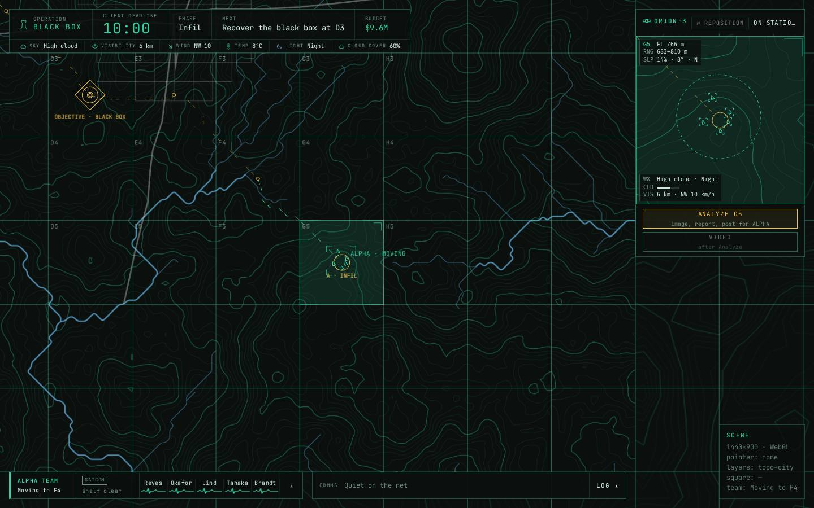
Clean opening. The objective, ALPHA and ORION-3 are readable at a glance. Analyze lit on the infil square is the first clear action.
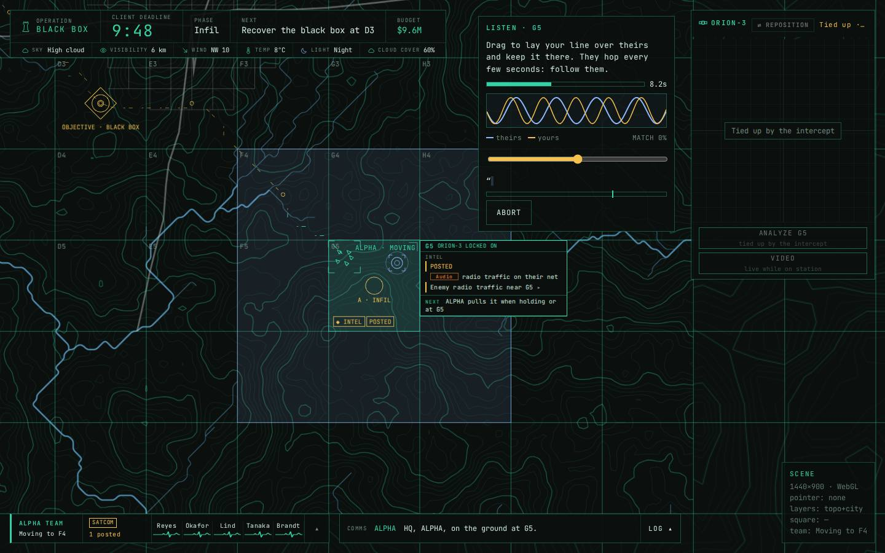
The one skill game. It ties up ORION-3 for about 20 s and always decodes to “UNIT HOLD POSITION”, so the reward never justifies the cost.
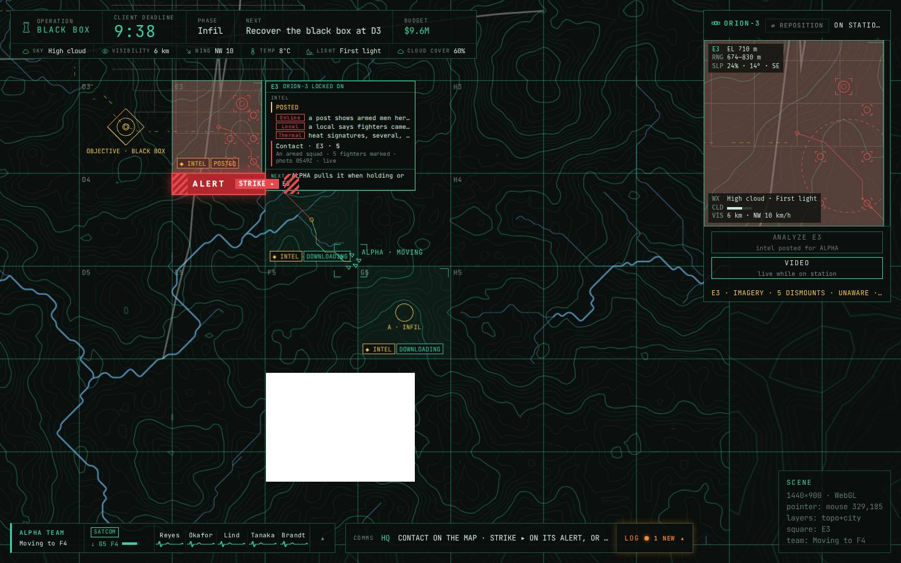
Strongest trigger in the game: one red band, one verb. Note the black box in the middle of the map (see bugs).
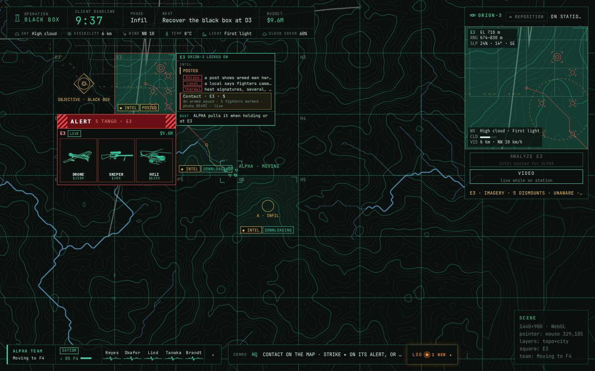
Drone, Sniper, Heli with prices. Drone always works, so this choice was the same all three times.
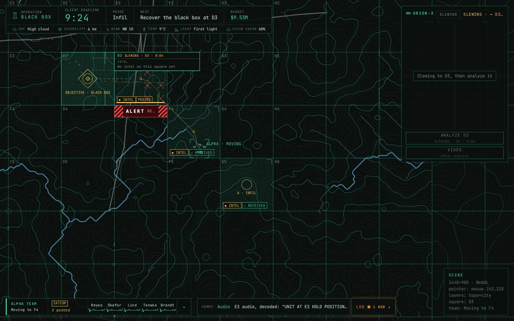
The scan-ahead rhythm feels good: slew, Analyze, ALERT, strike. The ALERT band truncates to “ALERT RE…”.
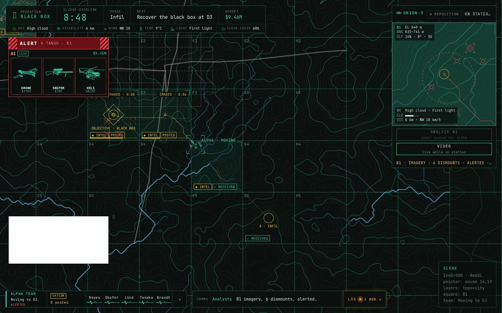
All three groups on the route are dead before ALPHA meets one. The mission is decided here, 1:12 in.
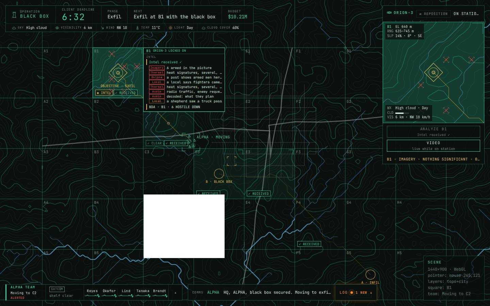
Budget is up to $10.21M from kills. The flyout repeats lines (Thermal ×2, Local ×3). The team bar still shows ALERTED in red with every group dead.
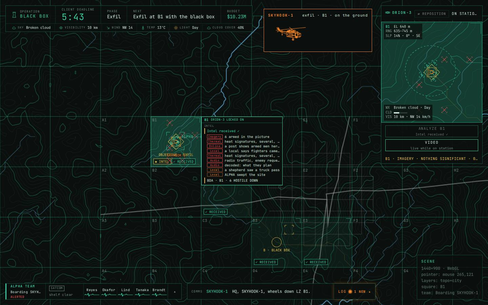
SKYHOOK-1's card is a nice beat, but HQ has been a spectator for over a minute.
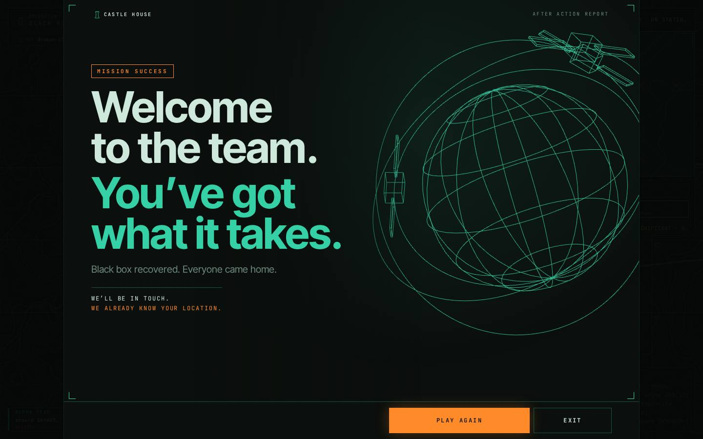
No time, spend or score. Same headline as run 2 below.
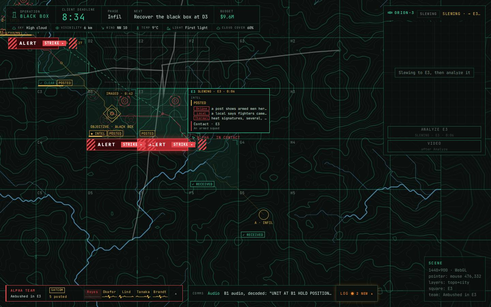
E3 was analyzed a minute earlier and its package posted. The SATCOM badge bottom left reads “5 posted”: none pulled. Two ALERT bands overlap at E3 and D3.
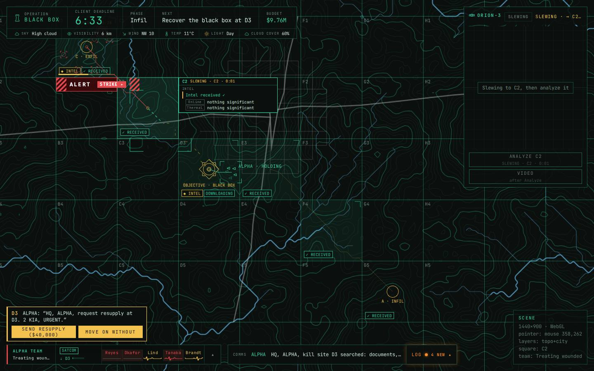
The best decision prompt in the game: clear stakes, a price, two options. It came after a second ambush at D3 that ALPHA had already called out (“Too strong to take… Moving to engage”).
Three operators down and still “You've got what it takes.” Only the tag and one line change.
ALPHA pulls on contact; a scanned square is never an ambush.
Cost above bounty, one weapon per target type, risk on alerted groups.
Intercepts and site searches pay out leads, caches, bonus targets or nothing.
Time, casualties, spend, intel; headline follows the grade.
Budget and roster persist into the next contract; the wrap-up offers that contract.
Production build served locally (vite preview), headless Chromium at 1440 × 900. A script played through the visible controls: Analyze, Reposition after tapping the next unscanned route square, ALERT → Drone, Listen, and the first answer on any prompt. It read game state only to log the radio, to aim the Listen slider at the visible target wave, and to pick the next route square the fog shows. The software renderer ran the mission clock at about 0.4× real time, so each mission took 12–20 real minutes; mission times above are game time. One seed only (the default), so map-specific results may differ on other seeds.